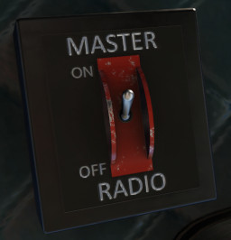
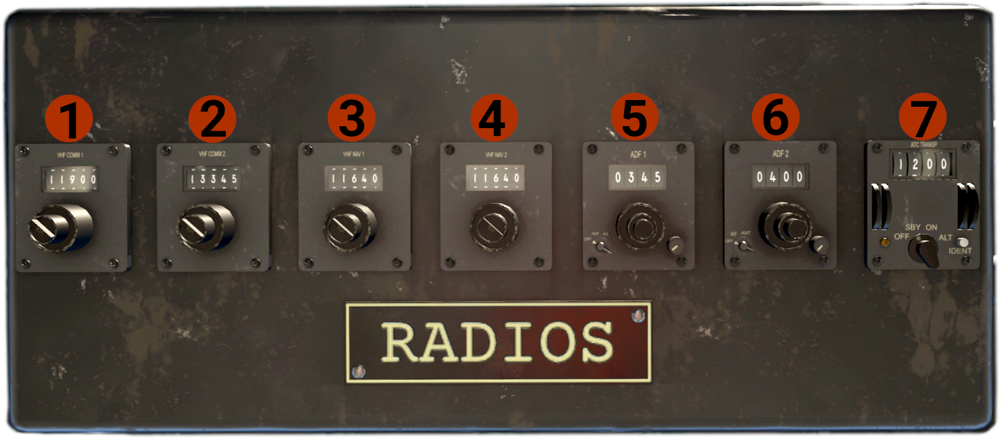

Radios
Master Switch
The Master Radio switch is located on the cockpit ceiling, on the left side of the radio stack, and controls the power to the radio stack.

Radio Stack
The radio stack is located above pilots heads, on the cockpit ceiling. 
- VHF COMM 1 radio: Has 2 rotary knobs. The big controls the frequency MHz, and the small one the frequency KHz. The small flatheaded knob, is the volume control for the radio.
- VHF COMM 2 radio: Same as VHF COMM 1 radio.
- VHF NAV 1 radio: Controls NAV 1 (VOR 1). Same controls as the COMM radios.
- VHF NAV 2 radio: Same as VHF NAV 1 radio.
- ADF 1 radio:
- On the left is the MODE knob, with 3 positions: OFF - ADF - ANT. Turn the knob to ADF to have indications in the RMI.
- In the middle there are 3 frequency control knobs. The top controls 1s KHz, the middle 10s KHz, and the bottom 100s KHz.
- On the right side is the volume control.
- ADF 2 radio: Same as the ADF 1 radio.
- Transponder:
- Has 4 knobs, 2 left and 2 right, each one controls the respective transponder digit.
- Middle-bottom is the MODE knob, with 4 positions: OFF - SBY - ON - ALT. The ALT position is the same as ON, since this aircraft has not altitude reporting altimeter.
- On the left bottom side is the ID indicator (light).
- On the right bottom side is the IDENT button.